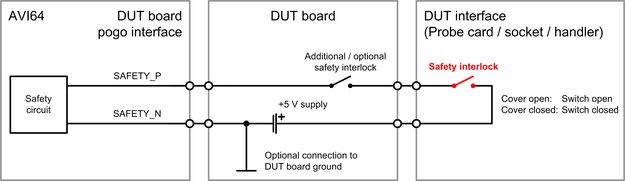

AVI64 safety pogo pins
The card features the two pogo pins SAFETY_P and SAFETY_N to control the on-board safety circuit. Some electrical design rules must be considered for the on-board safety circuit and the related hardware of the DUT board.
SAFETY_P
SAFETY_P is the high input of the on-board safety circuit. The pin must be connected to an adequate +5.0 V supply via a safety interlock on the DUT board or the DUT interface (Probe card, socket or handler). The return path is the SAFETY_N pin.
SAFETY_N
This pin is the return pin for the SAFETY_P pin. The two pins and the input circuit are isolated from the rest of the card. Parallel connection to the safety circuit of other AVI64 cards or similar circuits of other card types is supported.
Typical values, recommended operating conditions, and maximum ratings
Pin |
Parameter |
Value and unit |
|---|---|---|
SAFETY_P referenced to SAFETY_N |
Recommended input voltage with closed safety interlock |
5.0 V |
Typical input current @ 5.0 V |
6.0 mA |
|
Maximum input current @ 15.0 V |
10.0 mA |
|
Minimum input voltage with closed safety interlock |
2.7 V |
|
Maximum input voltage with open safety interlock |
1.0 V |
Pin |
Parameter |
Value and unit |
|---|---|---|
SAFETY_P |
Maximum voltage with respect to SAFETY_N |
15.0 V |
Minimum voltage with respect to SAFETY_N |
-1.0 V |
|
SAFETY_N |
Maximum voltage relative to common DUT board GND |
see note below |
Minimum voltage relative to common DUT board GND |
see note below |
Recommended circuitry
The diagram below shows the recommended circuitry for the safety pogo pins:

Recommended control supply
An adequate +5.0 V supply must be connected to the safety pogo pins via a safety interlock on the DUT board or the DUT interface. For information on the requirements of an adequate +5.0 V supply, see table Typical values and recommended operating conditions above.
We recommend using the utility supply on the UP5V pins or the +5 V utility supply on the XP pins of utility pogo blocks. Refer to Pogo pin assignment - Utility pogo blocks for the pogo pin assignment of the recommended utility power supplies.
Note that the +5 V supply on XP pins is optional: For V93000 EXA Scale systems, minimum one optional Utility Card must be installed. On V93000 systems, the supply is available only for the large or DUT Scale interface and on 4-row utility pogo blocks.
- Utility supply on UP5V pins:
- Utility power supply - UP5V pins (V93000 EXA Scale systems)
- Internal utility power supply (V93000 systems)
On V93000 systems, the internal supply is enabled as soon as the test head is switched on and a DUT board is connected. On V93000 EXA Scale systems, the power-on behavior depends on the compatibility settings of the system: For more information refer to section "Global compatibility settings" in Utility Card specific setup tasks or Internal utility resources specific setup tasks.
The supply pins are to be connected to the AVI64 card as follows:
Pin
Description
Connection
UP5V
+5V utility power Connect to pogo pin SAFETY_P via a safety interlock on the DUT board or DUT interface.
UGND
Utility ground and return of the power supply
Connect to pogo pin SAFETY_N.
- Utility supply on XP pins:
- Utility power supply - XP pins (V93000 EXA Scale systems)
- External utility power supply (V93000 systems)
For V93000 EXA Scale systems, the supply must be switched on or off by Device Test API IUtilityPower of SmarTest 8. For more information, see section "Switching the utility power supplies on and off" in Utility Card specific setup tasks.
For V93000 systems, the supply must be switched on or off by Test Method API UTILITY_POWER_STATUS of SmarTest 7 or by Device Test API IUtilityPower of SmarTest 8.
The supply pins are to be connected to the AVI64 card as follows:
Pin
Description
Connection
XPP5V
+5V utility power
Connect to pogo pin SAFETY_P via a safety interlock on the DUT board or DUT interface.
XPP5Vs
+5V utility power sense
Connect to XPP5V on the DUT board.
UGND
Utility ground and return of the power supply
Connect to pogo pin SAFETY_N.
UGNDs
Utility ground sense
Connect to UGND on the DUT board.
Functional changes
- Introduced in SmarTest 7.4.0 / 8.1.0